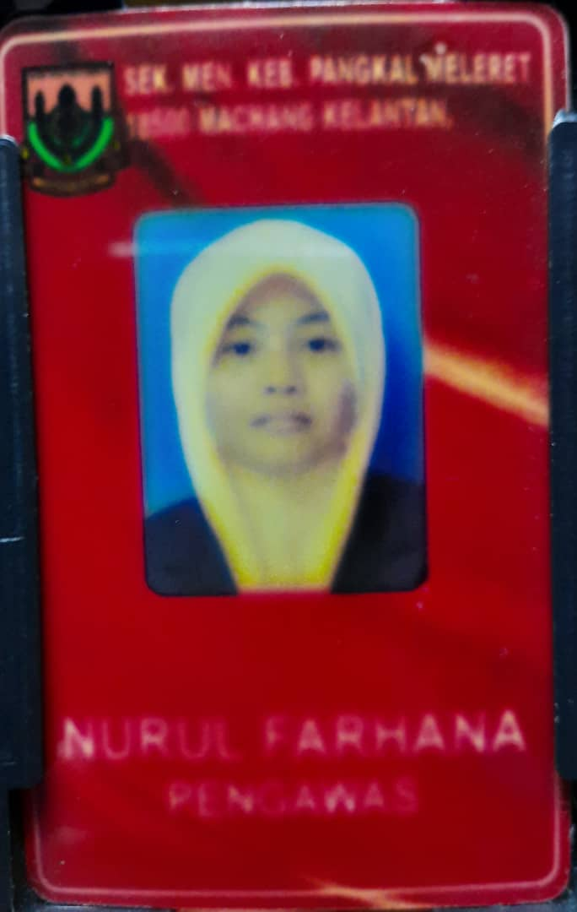
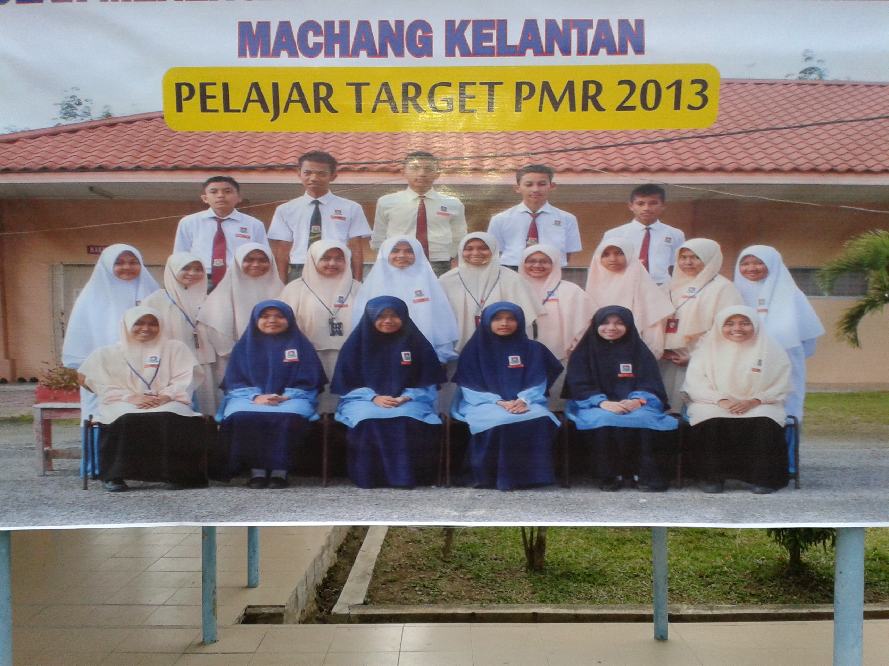
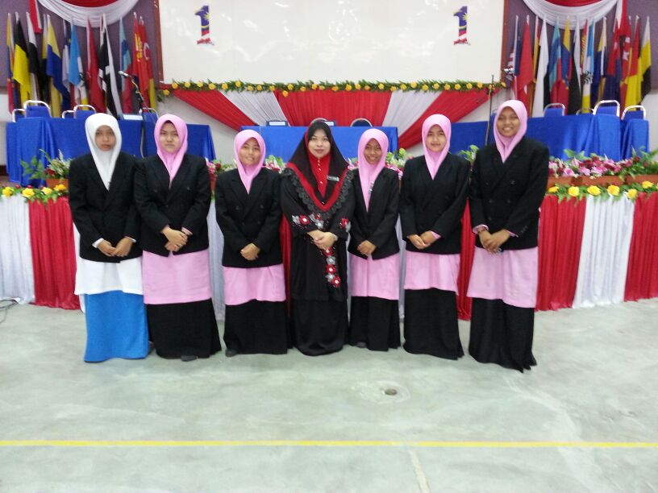
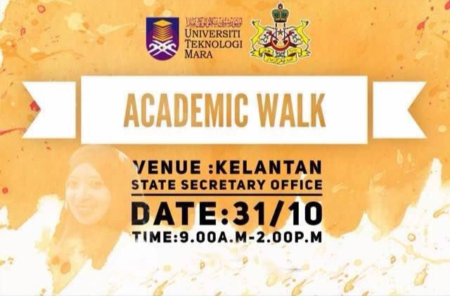
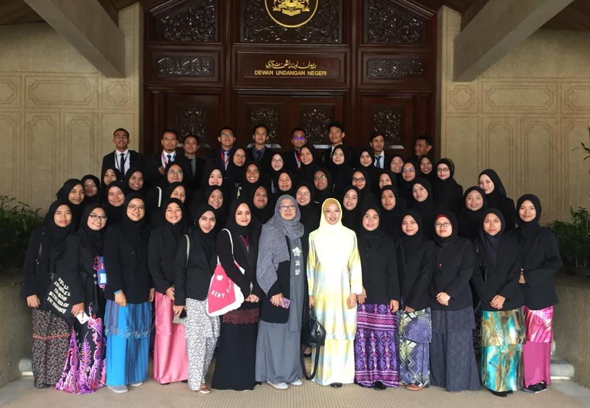
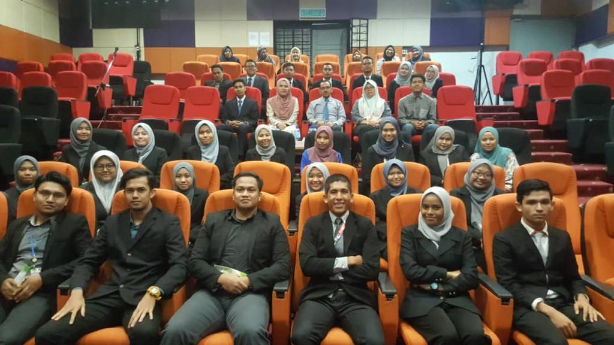
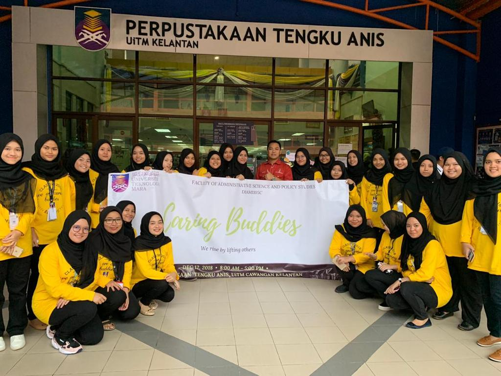

EXPERIENCE
"Experience is the best teacher"
HOMEPAGE
BIODATA
EXPERIENCE
EDUCATION
FAMILY
GALLERY
CONTACT ME
SECONDARY SCHOOL
|
|
|
During my secondary year in Form 3, I have been chosen to be a school prefect. I have been participated in Kem Jati Diri since then every year in order to build my leadership and communication skills.Hence, Kem Jati Diri has taught me a lot in order for me to carry out my duties as a school prefect.Then, I have been chosen to be one of the target students for Penilaian Menengah Rendah (PMR) so all the burdens were on my shoulders at that time in order to lift up my school's name by having good results. At the end of the day, I was one of the best students for PMR in 2013. Therefore, it was definitely a good experience throughout the year.
Next, in Form 4 I have started relax a bit where I have started trying and experiencing different things. One of them is participating in debate competition. It all started when my teacher have noticed that I talk a lot so she thinks that I have potential in order to become a debaters. Therefore, one day she offer me the position and I willingly accepted it. Through this debate competition, I met a lot of people where I have never met before and it is a good opportunity to blend with other people. It also make me a better and wise person since this competition thought me a lot on how to handle my level of patience. Another thing that I have tried are sports where I represent my school for netball, volleyball and handball competitions.These type of sports were goods for our physical and mental health since you need to jump and use all of your limbs in order to play it. It also one of the good experience I have since it taught me right in sportmanship skills.
DIPLOMA YEAR
|
|
|
|
During diploma days, on the last semester, we conduct many programs in order to fulfill our requirement before completing the diploma. Our first program was an academic walk to the State Secretary Office in Kota Bharu. From here we can see that on how 'Ahli Dewan Undangan Negeri' (ADUN) debate in order to introduce a new proposition for the state. Next is we conduct a talk entitle 'Industrial Talk by PERKESO'. This is because a lot of people whom still unaware of what are their benefits adn rights from it. Then, our last program was the 'Caring Buddies' aim in order to help students who in need since at that time it was at the end of the semester so a lot of students who was having problems in terms of financial. From this programs we can see that it is to ensure that we know on how to make a program from the scratch like write the proposal, send it to the upper level and held a meeting to delegate the task. Hence, it also to make sure that we fully prepared for the working life in the future because we already have the experience from it.